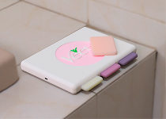
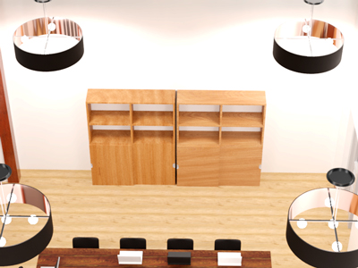

Design de Produto
Projeto II
Exercício II - Desenhar o escanhoar
Durante o primeiro semestre foi nos proposto a realização de uma máquina de depilar de mulher. Com o meu colega, criamos uma máquina de cêra que é wireless e de fácil transporte.
Exercício III - Sala do CTC
Este projeto foi realizado com o objetivo de remodelar uma sala de reuniões encontrada no recinto da ESELx. Em grupo, analisamos três problemas existentes na sala e decidimos soluciona-los através de uma norma que denominamos de "Minimalismo funcial". Com esta norma, substituímos a mesa anterior por com cerca de três metros enquanto que o resto da decoração foi disposto à volta da mesma. Assim conseguimos criar um espaço suficiente na sala de forma a que os elementos se mantêm-se organizados. Para os outros dois problemas, resolvermos criar um sistema de estores, tal como um teto falso, com a finalidade de regular a intensidade de luz presente na sala.
Ambas imagens acima representam a nossa remodelação vista de cima e do lado esquerdo.